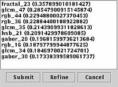

The basic philosphy of the Mirror approach is simply if you don't know for sure, then ask someone who does! So, the user may now provide relevance feedback on the terms suggested for query expansion. Obviously, the information presented in the current screenshot is not very suited for most users. But, under the assumption that a better visual representation of these clusters can be found, we believe such an explicit interaction step will be very helpful for both user and system.
| Prev | Next |
Last updated: December 9, 1999
Maintained by: arjen@acm.org